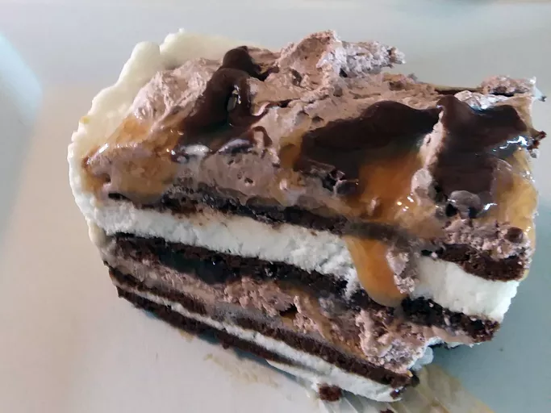

Home
Ice Cream Lasagna

This ice cream lasagna treat is sure to be a hit with all! This is an often requested dessert in my house.
Ingridents
- 24 frozen ice cream sandwiches, divided
- 1 (16-ounce) jar crunchy peanut butter, divided
- 1 (3.9-ounce) package instant chocolate pudding mix
- 1 (16-ounce) container frozen whipped topping, thawed
- 16 peanut butter cups, chopped, divided
- 1 (12-ounce) jar hot fudge ice cream topping, divided
- 1 (12-ounce) jar caramel ice cream topping, divided
Steps to make this a reality
- Line the bottom of a 9x13-inch pan with 12 ice cream sandwiches.
- Open the jar of peanut butter, place into microwave oven and microwave on low power for about 30 seconds at a time, until peanut butter is warm and spreads easily. Spread half the peanut butter over the layer of ice cream sandwiches.
- Mix instant chocolate pudding mix into whipped topping; spread half the mixture over peanut butter layer.
- Spread half the peanut butter cups over whipped topping layer.
- Remove tops of hot fudge and caramel topping jars and microwave on low power for about 10 seconds at a time, just until toppings are warmed and liquid. Drizzle half of the fudge and caramel sauces over peanut butter cups.
- Repeat layers, starting with remaining ice cream sandwiches, followed by remaining peanut butter, whipped topping mix, peanut butter cups, hot fudge sauce, and caramel sauce.
- Freeze dessert until solidly frozen, 1 to 2 hours.